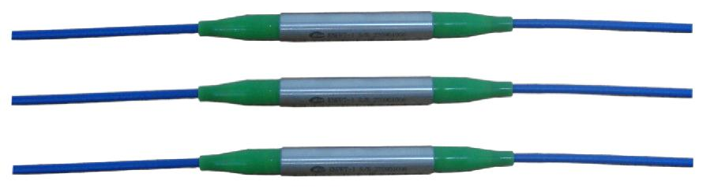
GM-FT01 通用温度传感器
应用最广的基础测温单元:桥梁、大坝、隧道管片等钢结构与混凝土结构内外温度的施工期与长期温度效应健康监测,同时作为应变等其他光栅传感器的温度补偿参考。
量程-40~120℃(可定制)
精度 / 分辨率±0.5℃ / 0.1℃
尺寸 / 防护Φ9×100mm · IP68
尾纤Φ3 / Φ8mm 铠缆
安装 / 工作温度夹持·绑扎·埋入 · 短时200℃
多通道多类型解调仪覆盖不同场景;管式 / 基片式 / 埋入式多封装传感器,适配埋入、贴装与极端环境。
自动化量产 + 自主供应链,器件到系统高性价比、快速交付;支持贴牌与深度定制开发。
发明与实用新型专利
软件著作权
核心技术平台 · FBG / DAS / DTS
GM-F 标准传感器型号 · 8 大类
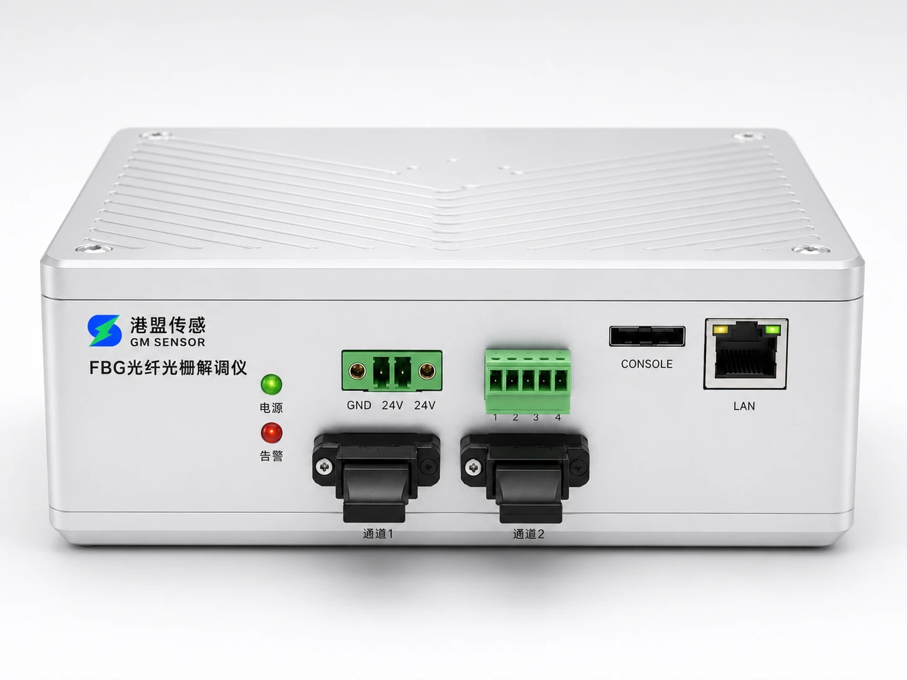
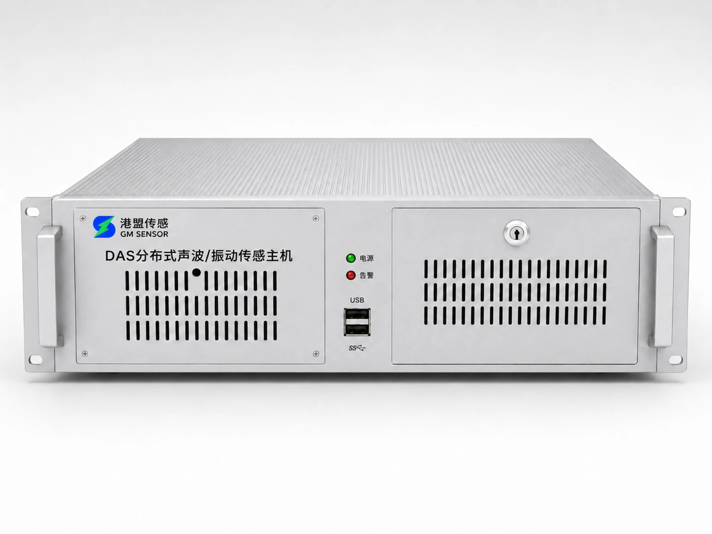
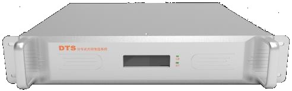
GM-WT200 FBG 光栅解调仪
GM-WT300 DAS 振动解调仪
GM-WT400 DTS 测温解调仪
8 大类 · 21 款标准型号
量程 / 尺寸 / 封装全系可定制
全系 IP68 · C 波段 1528~1568nm
结构健康监测(SHM)系统
矿用顶板监测系统(隔爆型)
监测软件平台 · 消防联动接口
宽谱光入射光栅区(周期 Λ),仅反射满足布拉格条件的窄带光 λB;温度 / 应变变化使 λB 线性漂移,解调反射波长变化量即精确反演温度与应变 —— 测量对象是"波长"而非光强,不受光源波动与弯曲损耗影响。
组网能力:单根光纤串联数十个不同中心波长的光栅,一台 GM-WT200 即构成准分布式多点监测网络,布线量较电测方案减少一个量级。
测量信息编码于波长,天然抗光强扰动,长期稳定
传感端无源无电,防爆场合(油库 / 煤矿)直接适用
全光纤链路,高压 / 变频 / 雷击环境下可靠工作
疲劳寿命远超电阻应变片,单纤可埋入结构内部
波长精度 ±2pm(典型),重复性 ±1pm,40dB 动态范围
1~32 通道可选,RJ45 / RS485 / CAN / 2.4G 无线多接口
-20~75℃ 宽温工作,功耗 ≤10W,DC 9~36V 宽压供电
161×144×33mm 紧凑机身,便于嵌入集成与现场部署

应用最广的基础测温单元:桥梁、大坝、隧道管片等钢结构与混凝土结构内外温度的施工期与长期温度效应健康监测,同时作为应变等其他光栅传感器的温度补偿参考。
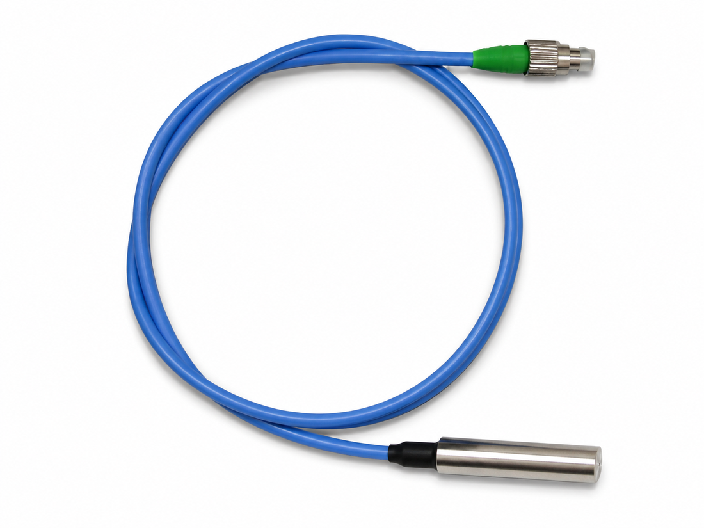
消防领域即"光纤光栅感温火灾探测单元",面向电磁干扰强、温度响应要求高的场合:电力设备 / 电缆测温、油库储罐、公路隧道、地铁与煤矿火灾探测。
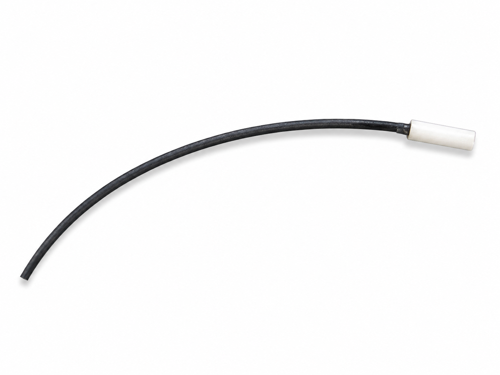
小型化单端陶瓷封装,专为电力开关柜内触头等狭小发热部位快速测温设计;全光纤绝缘耐高压环境,免维护长期在线运行。
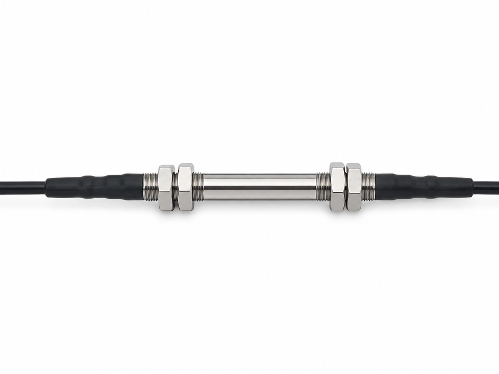
浇筑前绑扎于钢筋笼,长期监测混凝土内部应变应力;广泛用于桥梁、大坝、隧道管片等工业与民用建筑结构内部受力的施工期与运营期全过程监测。
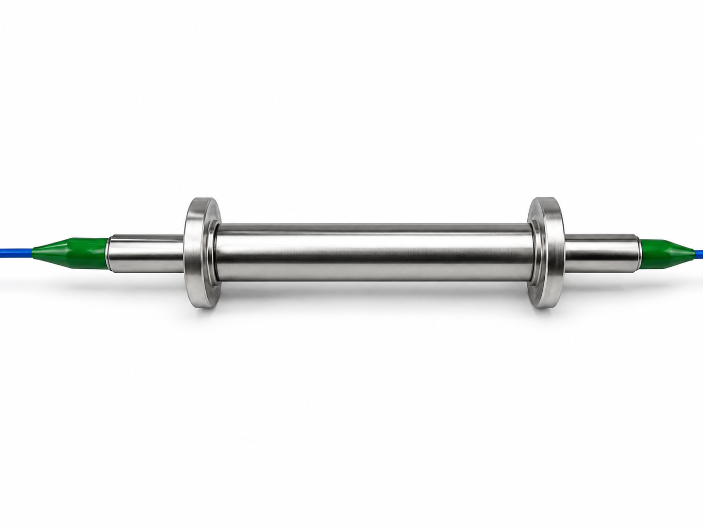
钢结构采用配套支座焊接、混凝土钻孔粘接安装,监测结构表面层应变应力;L 型大量程款与 E 型增敏款可选,适配不同刚度与变形水平的结构。
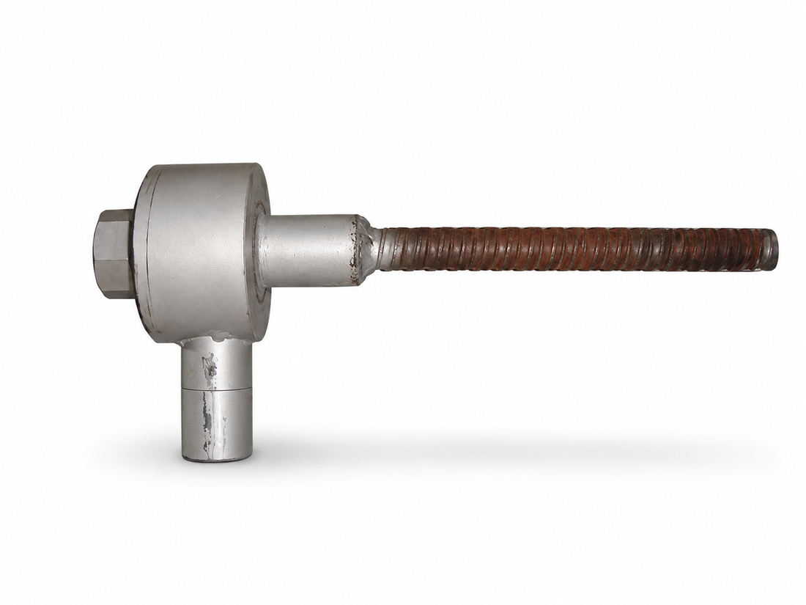
与受力钢筋对焊或绑扎于钢筋笼,直接测量结构内部钢筋应力;广泛用于大坝、桥梁、厂房基础、桩基、隧洞衬砌等结构的钢筋应力长期监测。
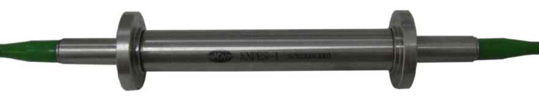
长期埋入式测量混凝土结构缝 / 伸缩缝开合度,亦用于边坡、大坝等结构物位移、沉陷与滑移监测。
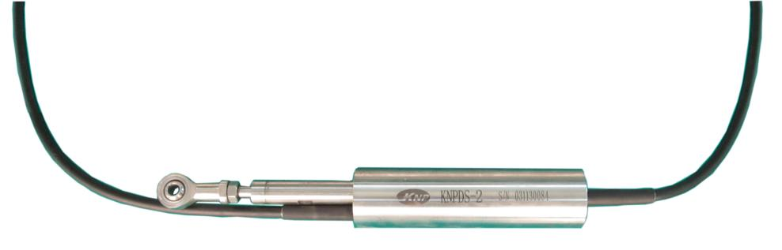
梁体与高层建筑等结构物沉降、位移及滑移长期测量;可靠性高、抗干扰能力强,底座安装便于更换标定。
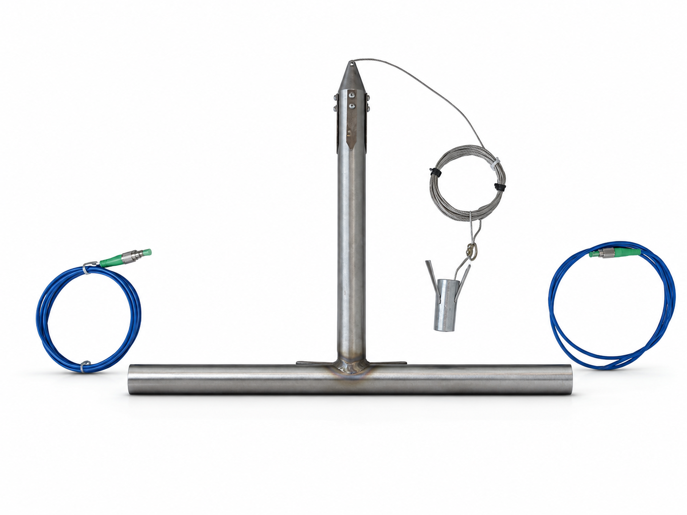
标配 20 米拉绳的大跨距相对位移测量,适合塔架、边坡等远端测点引出,布设灵活。
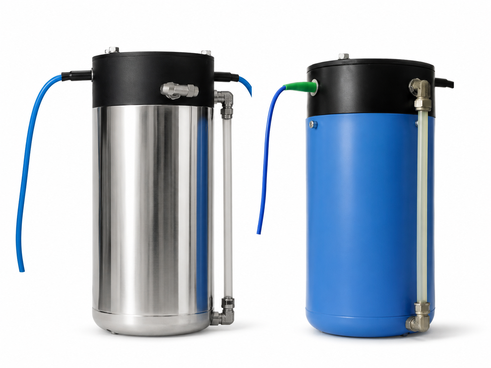
内置浮筒感知液位变化,多点组网测量相对沉降;不锈钢 / 注塑两种外壳适配不同现场环境。
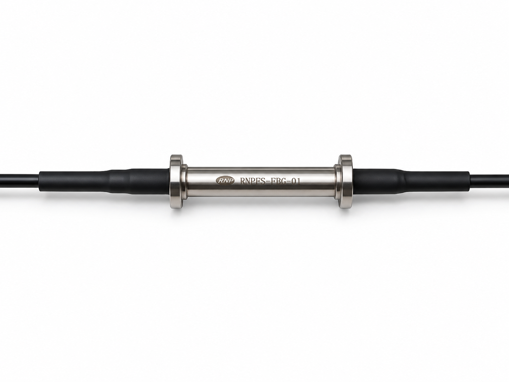
独有压力弹性元件作为传感基底,精确测量完全 / 部分饱和土壤与岩石中的小孔隙水压;埋入坝体、填土内监测地下水位与孔隙水压,也可安装于钻孔、测井或测压管中。
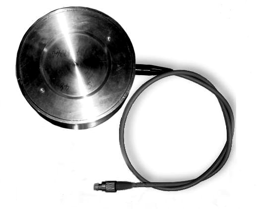
测量挡土墙、桥台、码头板桩墙、基坑护壁墙等填土与堤坝软基的土体压力及边界侧压力;与渗压计组合可重建坝体浸润线与有效应力状态。
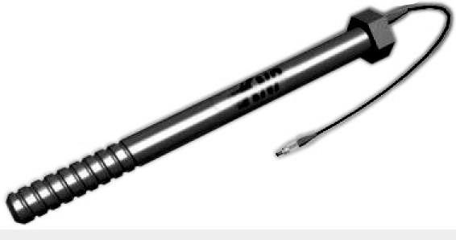
光栅敏感元件粘贴于螺栓表面,直接测量管片、法兰螺栓锚固应力;铠装防水保护,内 / 外置温度补偿,按螺栓规格定制,松动断裂趋势提前识别。
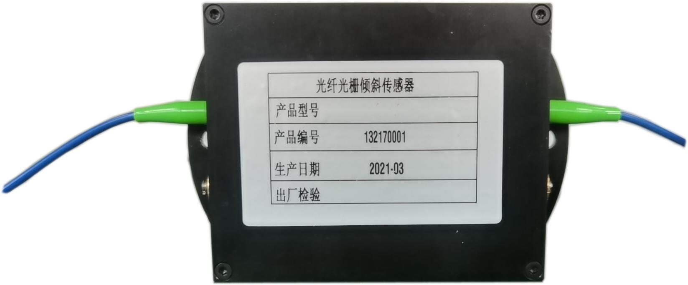
大桥、大坝及大型结构低频振动监测;多只组合实现二维 / 三维加速度测量,标准款 / 增强款两代可选,精度高、灵敏度高、抗干扰、寿命长。
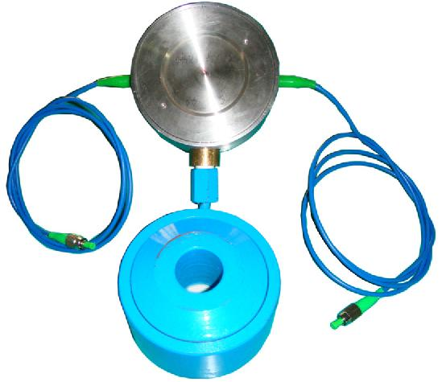
桥塔、电力杆塔、高层建筑倾斜及盾构隧道收敛变形、滑坡监测;双光栅封装结构实现温度自补偿,波长差分解算简便可靠。
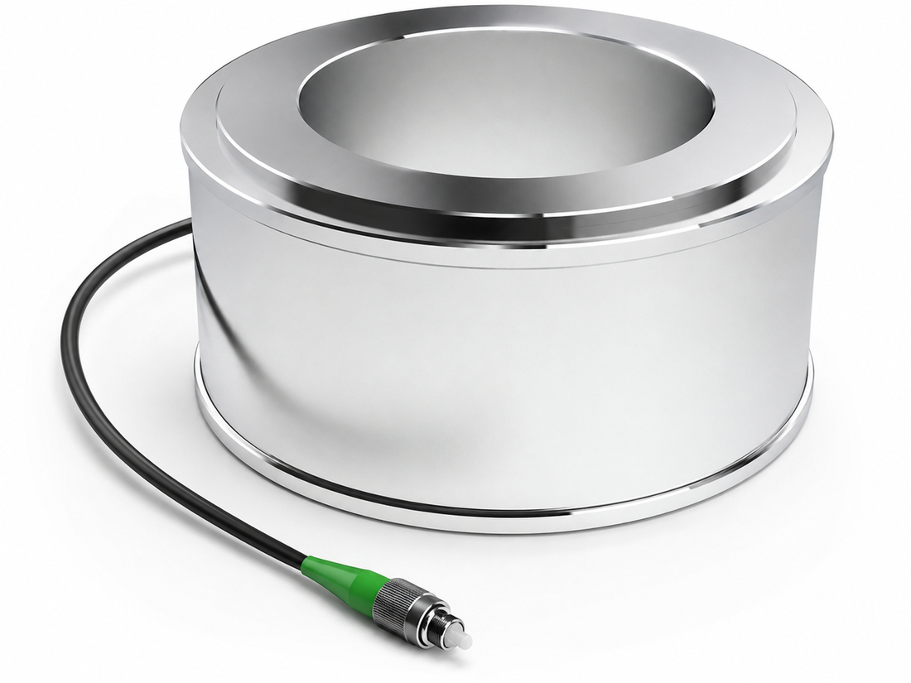
高强合金钢筒内置 3~6 支光栅应变计:荷载使钢筒轴向变形,应变计同步感知波长变化,经标定系数解算索力;均布测点同时实现 120° 偏载监测,支撑混塔与锚索受力状态整体评估。
套接于锚杆托盘与岩壁之间,监测端头锚固锚杆 / 锚索对围岩的承托载荷。
0~150kN · 5%F.S. · 1kN · IP54
光栅内置于钢锚杆,反演巷道支护全长应变 / 轴力 / 弯矩 / 剪应力,支撑参数设计优化。
70kN · 6%F.S. / 1%F.S. · 锚固
基点锚头固定于稳定岩层,监测顶板岩层锚固范围内外位移量,离层趋势早发现。
200mm 可续测 · 5%F.S. · 395×306×34
FRP 拉制时植入光栅,为岩土锚固支护提供长期、稳定、可靠的受力监测手段。
拉伸 500MPa · 1%(0.5%可选) · IP68
温度 · 锚杆应力
测力锚杆 · 离层仪
温度 · 锚杆应力
测力锚杆 · 离层仪
温度 · 锚杆应力
测力锚杆 · 离层仪
系统价值 顶板状态自动监测与汇报,减少井下人工巡检;数据为锚杆支护安全施工与参数优化提供依据。
应变 FS02 · 温补 FT01 · 振动 FA01 · 倾角 FI01 · 位移 FD02 · 索力 FL01,单根光纤串联数十测点。
GM-WT200(1~32 通道,1pm 分辨率,1/100/1000Hz 可选)接入 SHM 平台:在线评估 · 事件报警 · 应急预案。
传感器供货 / 系统集成 / 数据服务三种模式,配套深化设计图、安装标定与验收支持。
案例 利用通信光缆为南昌八一大桥完成"体检" —— 识别主桥墩、斜拉索振动特征与固有频率,评估结构健康水平。
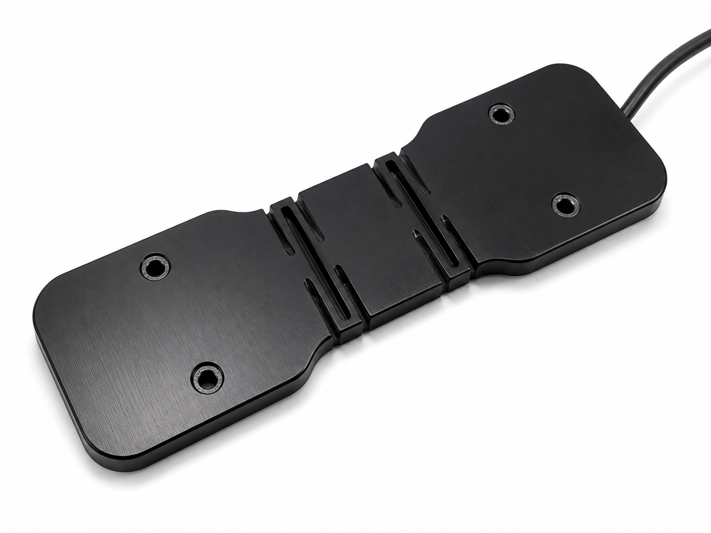
叶根 3% 区域截面布置 3~4 支,监测摆振 / 挥舞方向弯矩;避开手糊区与铺层截止点,符合 JG/T 422-2013。
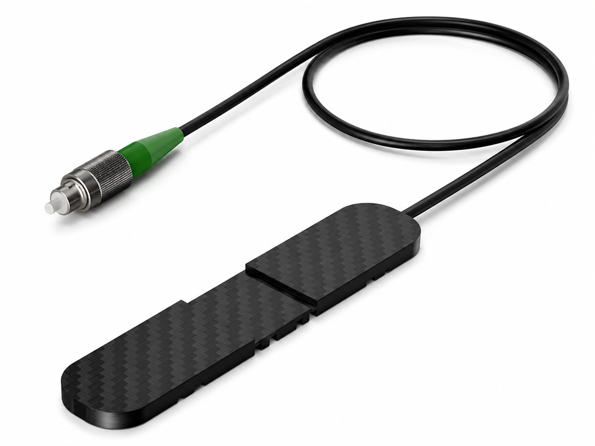
特种胶装工艺长期稳定;疲劳寿命优于电阻应变片,一致性好、可任意互换,表面粘贴安装。
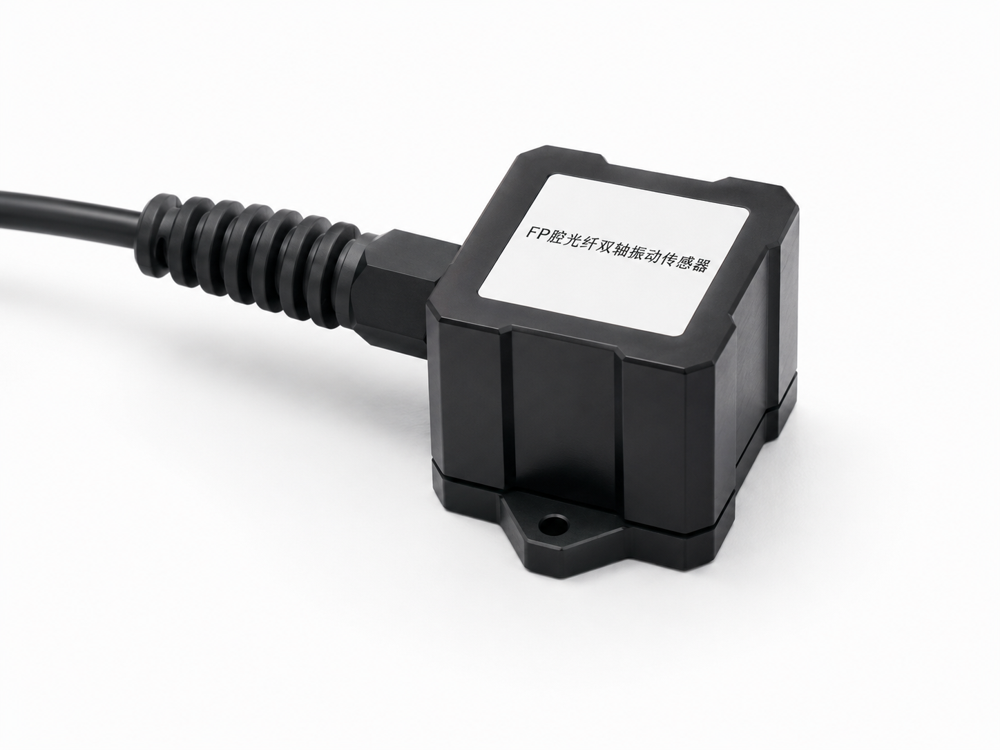
双轴同测简化布点,实时监测叶片与塔筒振动状态;频率与加速度量程支持按机型定制。
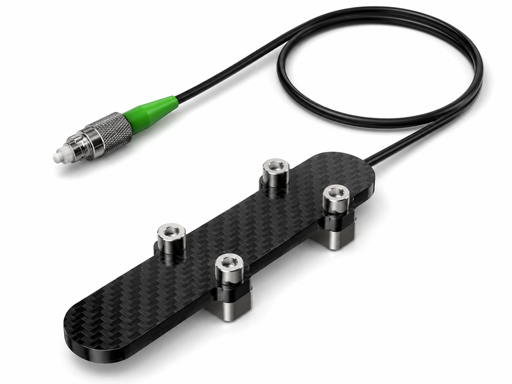
监测法兰间隙与螺栓状态,松动、大面积断裂实时告警,断裂前即可发现异常;位移系数 53μm/nm。
塔筒姿态倾斜与基础不均匀沉降监测;双光栅封装温度自补偿,差分解算简便,长期姿态跟踪。
混塔预应力锚索 24 小时实时监测:3~6 支 FBG 均布测力,120° 三点偏载识别,整体受力状态评估。
"大地 CT" 地下结构成像:利用已有通信光缆对地下结构成像——解调振动波形 → 实时成像计算 → 速度剖面,获取地质结构信息;光缆铺设一次、长期重复使用。
每一小段光纤都是一个传统单点地震仪,单缆即上万通道观测阵列。
振动波形连续在线解算,速度剖面实时更新,支撑动态过程追踪。
光缆即长期观测台阵,可重复使用,全生命周期观测成本极低。
观测"梅花"台风期间海底 0.08~0.38Hz 低频振动,反演海流方向、海浪传播与潮汐变化等海况信息。
分布式光纤阵列捕捉火山喷发激发的地震动信号,验证光纤在极端环境下的连续观测能力。
利用海底通信光缆探测断层结构,开创"通信光缆即地震台阵"的观测范式。
高相干激光脉冲沿纤传播,每一点均产生背向瑞利散射;振动 / 声波扰动改变该点折射率与长度,散射光相位随之变化,相位即信息。
干涉仪结构捕捉散射光相位变化,替代传统强度检测
外差解调 / 相位生成载波算法,定量还原频率与幅度
与仅定性报警的 DVS 不同,可还原声波模型用于事件分类
标配 50km,选配拉曼放大器可达 100km,覆盖长输线路
空间分辨率 / 定位精度 3.2m,远距离下依然精细
0.01Hz~50kHz 响应,23552 道并行解调,灵活抽取
窄线宽 ≤1kHz 激光器,RIN <-120dB/Hz,波形还原率 ≥99%
响应频带低至 0.01Hz,具备优异微弱信号探测能力,远端形变与近端高频事件同框感知。
波形还原率 ≥99%,真实呈现振动幅值、频率与相位,支撑事件精准分类与误报抑制。
全空间 · 全时间 · 全天候连续覆盖;高集成、无前端、少运维,部署即值守。
第三方破坏(机械 / 人工开挖)提前预警;泄漏声纹检测定位;PCCP 断丝识别。
攀爬、翻越、剪切行为分类与米级定位,机场、营区、变电站全天候值守。
保护区违规施工闭环预警;路面塌陷、异常停车事件感知,联动视频复核。
城市近地表成像、堤坝渗流探测、海缆与海洋观测等科学级应用。
中线管理公司邀请多家单位对北京段下游输水管道对比监测。基于 DAS 设备与管道内既有通信光纤,成为唯一一家监测结果与实际情况完全吻合的单位。
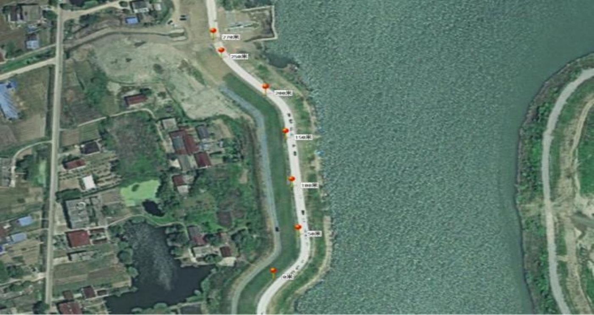
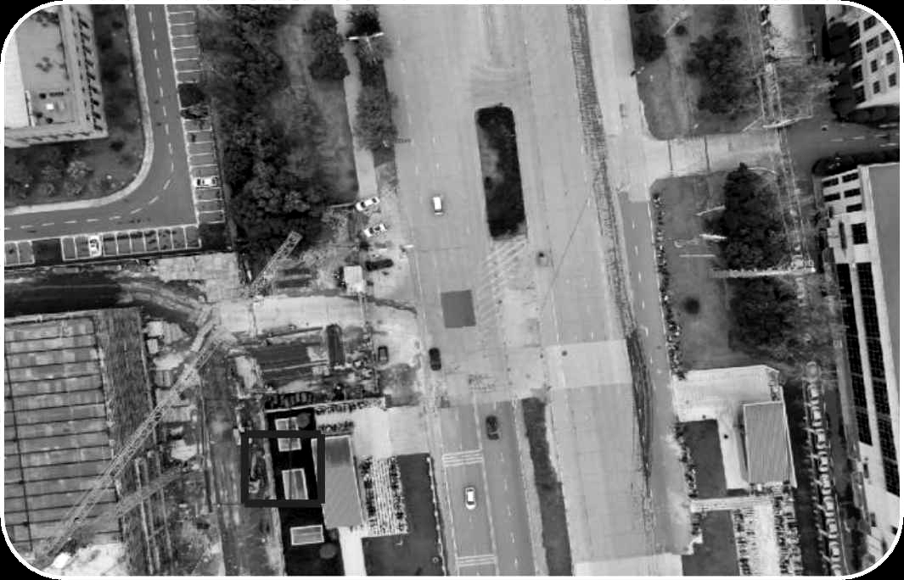
44.8km 保护区实时监测。桃花潭站实录:15:36 预警生成 → 15:38 推送 → 15:41 无人机复核,全流程 5 分钟闭环处置;报警信息累计 2936 条,巡检里程 2.1 万公里。
盾构掘进前对左右线地层进行 DAS 精细化成像,提前识别孤石、富水带等地质风险,为掘进参数决策与地面保护提供依据;左右双线剖面互相印证。
连接城市既有光缆完成近地表多模式噪声面波成像(SRL 期刊发表);随机选取 470m 道路,成像深度达 50m,检测效率与深度均优于探地雷达,可用于道路塌陷隐患普查。
合巢芜管理处 — 凌家滩收费站 22km 路段实时监测。2025 年 2 月合肥往芜湖方向事故:15:30 系统预警推送,较接警时间提前 6 分钟;上线至今稳定无故障运行。
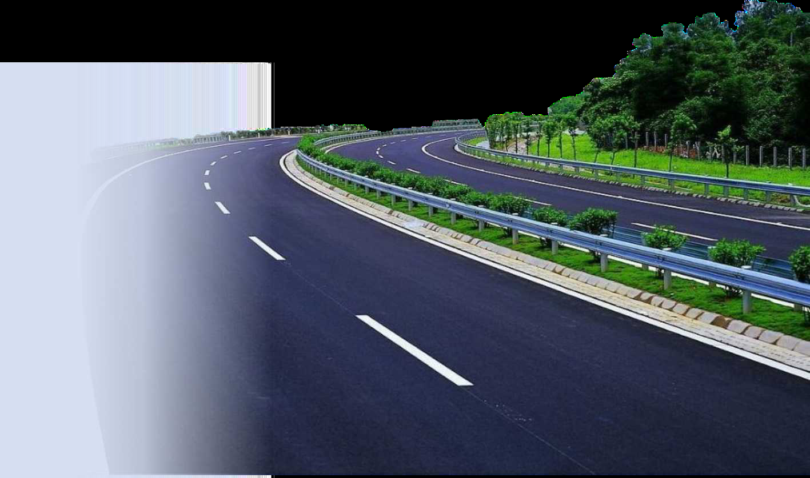
反斯托克斯光对温度极敏感,斯托克斯光温度不敏感、作稳定参考;两者强度比值消除光源波动与光纤损耗,解调真实温度;按脉冲发射与散射返回的时间差定位温度点 —— 连续、无盲区的整纤温度场。
与感温电缆 / 点式探测器相比:DTS 属于规范定义的"线型感温火灾探测器",单机即覆盖数公里,定位精确到米级以内,寿命长且免维护,全生命周期成本更低。
12.5km / 通道 × 4 通道(8 通道可选),单模长距款可定制
空间分辨率 0.2m,温度分辨率 0.1℃,0.5s 完成测量
自研恒温光电模块 + 全嵌入式板卡,ARM + Linux 架构
整机 15~25W,RS485 / 以太网 / CAN,直连消防主机
GM-WT400 解调仪 + 感温光缆(正弦贴敷 / 悬挂敷设)+ 监测软件;局部高危点位叠加 GM-FT02 感温探测单元增强。
GB 50116 火灾自动报警系统设计规范 · GB 50838 城市综合管廊工程技术规范 · GB/T 21197 线型感温火灾探测器。
1 公里防火分区 = 1 台 GM-WT400 + 感温光缆 + 分区软件;报警经 RS485 / 干接点联动消防主机与风机水泵。
FBG / DAS / DTS 三大平台 + GM-F 全系传感器,从光栅器件到监测系统一体交付。
南水北调、合肥轨道、芜合高速等在运项目;预警准确率与稳定运行经真实现场检验。
销售总监 王永强 · 176 2125 1612(电话 / 微信)
OEM / ODM 与项目合作欢迎垂询。